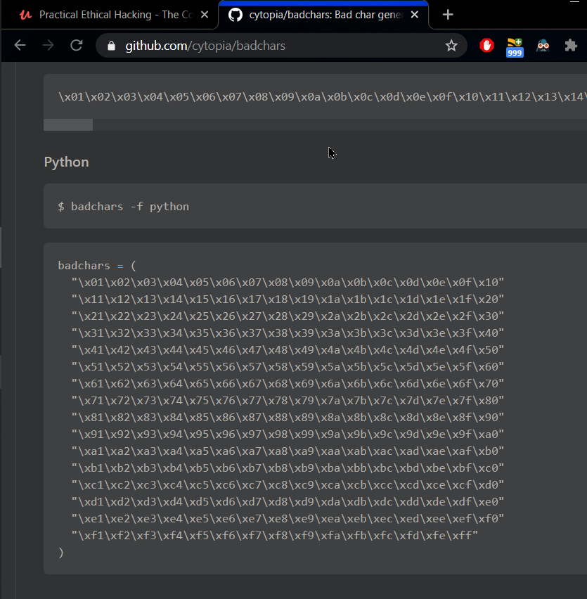

when we talk about finding bad characters we're talking about this in relation to generating shell code.
When we generate shell code we need to know what characters are bad for te shell code and what characters are good for the shell code.
we can do that by running all the hex characters through our program and seeing if any of them act up. By default x00 byte acts up.
First and foremost, \x00 is universally a 'bad character'. This is a null-byte, which will terminate the rest of the application code. These should never be sent in an exploit as part of the shellcode payload. However, there are potentially other bad characters that may 'exist' within a target application, which if used in an exploit can mangle the intended shellcode instructions and cause an exploit to fail.
There are no definitive 'bad characters', but there are often common characters that are seen. These can be the Form Feed \xFF, Line Feed \x0A, and Carriage Return \x0D instructions. Often these can be considered to be bad characters on web services.
(https://www.ins1gn1a.com/identifying-bad-characters/)
let's go out internet and say badchars

let's take that badchars and with that write a script.

okey let's run it and don't forget to run immunity and vulnserver.

it broke the server no big deal. What we are gonna look is hex dump of ESP
Now highlight the ESP address and right click and say follow in dump.


Now in hex dump if the order is correct then there are not bad chars but if there are some characters which breaks the order then these are bad chars.

so in here there is not bad char highlighted are just start and finish point
but if there are then what happens let's see

as wecan see the order breaks in many place and we need to note that missing characters because we will want to use these.